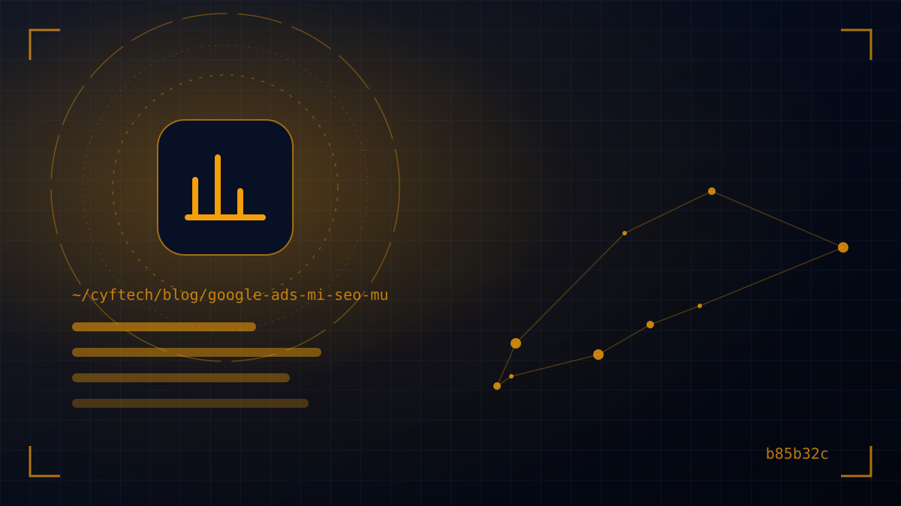

„Sollen wir in Werbung oder in SEO investieren?“ Das ist die Frage, die wir von Unternehmern am häufigsten hören. Die kurze Antwort: Beide erfüllen nicht dieselbe Aufgabe. Die richtige Antwort auf Google Ads oder SEO hängt vom Alter Ihrer Website, Ihrem Budget und davon ab, wie schnell Sie Kunden brauchen.
In diesem Beitrag stellen wir beide Kanäle nebeneinander: wie sie funktionieren, wo die Kosten entstehen, wann welcher Kanal vorn liegt und wie KI-Übersichten 2025–2026 beide beeinflussen. Am Ende finden Sie einen beispielhaften Budgetansatz für drei verschiedene Unternehmensszenarien.
Wenn Sie neu im Thema SEO sind, empfehlen wir Ihnen zuerst unseren Beitrag Was ist SEO?; hier konzentrieren wir uns auf den Vergleich und die Entscheidung.
Der grundlegende Unterschied zwischen Google Ads und SEO
Wenn Sie bei Google suchen, sehen Sie auf der Ergebnisseite zwei Arten von Einträgen. Ergebnisse mit dem Label „Gesponsert“ sind Google Ads-Anzeigen; der Werbetreibende zahlt pro Klick. Die Ergebnisse ohne Label darunter oder dazwischen sind organische Ergebnisse; dort kommt man nicht durch Bezahlung hin, sondern durch SEO-Arbeit.
Google trennt beide Bereiche strikt: Werbung verbessert Ihr organisches Ranking nicht, und das Abschalten von Anzeigen verschlechtert es nicht. Beide Kanäle konkurrieren auf derselben Seite, folgen aber völlig unterschiedlichen Regeln.
| Kriterium | Google Ads | SEO |
|---|---|---|
| Tempo der Ergebnisse | Nach Freigabe der Kampagne, meist noch am selben Tag | Wochen bis Monate; je nach Wettbewerb |
| Kostenmodell | Bezahlung pro Klick + Verwaltungsaufwand | Inhalte, technische Arbeit und Zeit; Klicks kostenlos |
| Nachhaltigkeit | Ist das Budget aufgebraucht, endet die Sichtbarkeit | Erarbeitete Sichtbarkeit summiert sich und hält eine Weile an |
| Kontrolle | Keywords, Region, Uhrzeit, Gerät und Text liegen ganz bei Ihnen | Über das Ranking entscheidet Google; indirekte Kontrolle |
| Messung | Kosten pro Klick und pro Conversion sind klar ersichtlich | Die Wirkung verteilt sich über längere Zeit, die Messung ist schwieriger |
| Am besten geeignet für | Schnelle Nachfrage, Kampagnen, Tests, saisonale Verkäufe | Langfristigen, nachhaltigen Traffic mit niedrigen Stückkosten |
Wie funktioniert Google Ads und was bestimmt die Kosten?
Google Ads ist ein Auktionssystem; doch wer am meisten zahlt, gewinnt nicht immer. Laut Google-Ads-Hilfe entscheidet der Anzeigenrang, ob eine Anzeige ausgeliefert wird und an welcher Position. Die wichtigsten Faktoren des Anzeigenrangs:
- Ihr Gebot: Der Höchstbetrag, den Sie für einen Klick zu zahlen bereit sind. Der tatsächlich gezahlte Betrag liegt meist darunter.
- Qualität von Anzeige und Landingpage: Wie relevant die Anzeige für die Suche ist, die erwartete Klickrate und wie nützlich und benutzerfreundlich die Landingpage ist. Zusammengefasst wird das im Qualitätsfaktor.
- Suchkontext: Suchbegriff, Standort und Gerät des Nutzers, Zeitpunkt der Suche und die übrigen Ergebnisse auf der Seite.
- Assets und Schwellenwerte: Die erwartete Wirkung von Anzeigen-Assets wie Telefonnummer und Sitelinks sowie die Mindestqualität, die für jede Position erforderlich ist.
Daraus folgt etwas Wichtiges: Nach Googles eigenen Worten führen hochwertige Anzeigen zu niedrigeren Kosten pro Klick. Ein Unternehmen, das Anzeigen auf eine schlechte Landingpage schaltet, zahlt also für denselben Klick mehr als sein Mitbewerber. Wie effizient Ihr Werbebudget ist, hängt stark von der Qualität Ihrer Website ab.
Die Kosten pro Klick variieren stark nach Branche, Stadt, Wettbewerb und Zeitraum; in Bereichen wie Rechtsberatung, Versicherungen oder Ästhetik kann ein einzelner Klick recht teuer sein, während er bei lokalen Nischensuchen deutlich günstiger bleibt. Aktuelle Schätzungen für Ihre Branche liefert der kostenlose Keyword-Planer von Google Ads.
Wo entstehen die Kosten von SEO?
Der Satz „SEO ist kostenlos“ ist nur halb wahr. Für organische Klicks zahlen Sie Google nichts; Sichtbarkeit zu gewinnen, erfordert aber Arbeit, und diese Arbeit hat ihren Preis:
- Technische Basis: Eine schnelle, mobilfreundliche, crawlbare Website. Details finden Sie in unserer technischen SEO-Checkliste.
- Inhalte: Aussagekräftige Seiten für jede Leistung und Ratgeberbeiträge, die die Fragen der Kunden beantworten. Das ist meist der zeitaufwendigste Posten.
- Autorität: Natürliche Backlinks, Branchenverzeichnisse, Erwähnungen in der Presse und Bewertungen für lokale Unternehmen.
- Zeit: Auch die Wartezeit auf Ergebnisse ist ein Kostenfaktor; in dieser Zeit müssen Sie Kunden über andere Kanäle gewinnen.
Der wirtschaftliche Vorteil von SEO zeigt sich mit der Zeit. Eine gut rankende Leistungsseite bringt Monat für Monat Besucher, ohne zusätzliche Klickkosten. In der Werbung kostet der hundertste Kunde dagegen genauso viel wie der erste – bei steigendem Wettbewerb sogar mehr.
Werbung ist ein gemietetes Schaufenster, SEO Ihr eigener Besitz. Beides hat seinen Platz, aber Miete möchte man nicht ewig zahlen.
Wann ist Google Ads sinnvoller?
- Wenn Ihre Website neu ist: Solange es noch keine organische Sichtbarkeit gibt, verschafft es dem Unternehmen Luft, die ersten Kunden über Werbung zu gewinnen.
- Wenn Sie schnell Ergebnisse brauchen: Bei einer neuen Filiale, Saisonprodukten, Aktionszeiträumen oder Monatszielen bleibt keine Zeit zum Warten.
- Wenn Sie etwas testen möchten: Ob es Nachfrage nach einer neuen Leistung gibt und welche Botschaft mehr Klicks bekommt, sehen Sie in wenigen Wochen. Diese Daten steuern später auch Ihre SEO-Inhalte.
- Wenn es organisch sehr starke Mitbewerber gibt: Bei Suchen, die von großen Marken und Marktplätzen dominiert werden, kann Werbung kurzfristig der einzige Weg zur Sichtbarkeit sein.
- Bei Notdiensten: Bei Leistungen, die „sofort“ gesucht werden, wie Schlüsseldienst, Installateur oder Abschleppdienst, bringen Anzeigen mit Anruf-Option direkt Telefonate.
Wann ist SEO sinnvoller?
- Wenn Sie langfristig denken: Bietet Ihr Unternehmen jahrelang dieselben Leistungen an, wird organische Sichtbarkeit mit der Zeit zum Kanal mit den niedrigsten Stückkosten.
- Wenn Ihre Kunden nach Recherche entscheiden: In Bereichen wie Software, B2B-Dienstleistungen, Bildung oder Gesundheitstourismus lesen und vergleichen Kunden vor dem Kauf. Auf dieser Reise mit Ratgeberinhalten präsent zu sein, schafft Vertrauen.
- Wenn Klickpreise in Ihrer Branche sehr hoch sind: Wo jeder Klick teuer ist, ist organischer Traffic entsprechend wertvoll.
- Wenn Sie ein lokales Unternehmen sind: Das Google-Unternehmensprofil und Sichtbarkeit in Maps können ohne Werbung kontinuierlich Anrufe und Besuche bringen. Dieses Thema behandeln wir in unserem Leitfaden für lokales SEO ausführlich.
- Wenn Ihr Budget nicht für dauerhafte Werbung reicht: Kleine und unregelmäßige Werbebudgets können in der Auktion nicht mithalten und verpuffen. Dann ist es oft effizienter, die Arbeit in bleibende Werte zu investieren – also in Ihre Website und Ihre Inhalte.
Wie beeinflussen KI-Übersichten beide Kanäle?
Googles Funktionen AI Overviews (KI-Übersichten) und KI-Modus werden seit Februar 2026 in der Türkei schrittweise eingeführt. Diese Änderung wirkt sich auf beide Kanäle unterschiedlich aus.
Auf der organischen Seite
Bei einfachen Informationsfragen können Klicks zurückgehen, weil ein Teil der Antwort direkt auf der Ergebnisseite zusammengefasst wird. In einer Studie des Pew Research Center von 2025 in den USA klickten Nutzer bei Suchen mit KI-Übersicht bei 8 Prozent der Besuche auf klassische Ergebnisse, ohne Übersicht bei 15 Prozent. Google wiederum gibt an, dass Klicks über Links in AI Overviews tendenziell hochwertiger sind und Nutzer mehr Zeit auf der Website verbringen. Um in diesen Übersichten als Quelle zu erscheinen, gibt es keine besonderen technischen Anforderungen; indexierte, nützliche und originelle Inhalte genügen.
Auf der Werbeseite
Google testet, Anzeigen unter und innerhalb von KI-Antworten zu zeigen, wo es passt, und weitet das schrittweise aus. Zudem kann mit wachsendem Platz der Übersicht die Zahl der klassischen Ergebnisse und Anzeigen auf dem ersten Bildschirm sinken. Wichtiger als „auf der ersten Seite zu sein“ wird es dadurch, bei kommerziellen Suchen mit höchster Kaufabsicht sichtbar zu sein.
Praktische Schlussfolgerung: Akzeptieren Sie Traffic-Verluste bei informationsorientierten Suchen, produzieren Sie aber weiter Inhalte für die Markenbekanntheit; bei Suchen mit hoher Kaufabsicht sollten Sie organisch und in der Werbung stark sein. Wer sich zum Kauf entschieden hat, begnügt sich nicht mit der Übersicht, sondern klickt, um ein Angebot einzuholen.
Das beste Ergebnis: Google Ads und SEO gemeinsam nutzen
Für die meisten Unternehmen lautet die richtige Frage nicht „entweder oder“, sondern „in welcher Phase wie viel“. Beide Kanäle befruchten sich gegenseitig:
- Aus Werbedaten erfahren Sie, welche Keywords wirklich Umsatz bringen, und planen Ihre SEO-Inhalte danach.
- Bei Keywords, für die Sie organisch bereits oben stehen, reduzieren Sie das Werbebudget und verlagern es auf Keywords, bei denen Sie organisch schwach sind.
- In Werbung und organisch zu erscheinen, also zweimal auf derselben Ergebnisseite, stärkt das Vertrauen.
- Eine schnelle, gut gestaltete Website steigert die Effizienz beider: den Qualitätsfaktor in der Werbung, Ranking und Conversion im organischen Bereich.
Drei Szenarien, drei Ansätze
| Situation | Empfohlene Gewichtung | Warum? |
|---|---|---|
| Neu gegründetes Unternehmen, neue Website | Anfangs werbelastig, parallel SEO-Grundlagen | Die ersten Kunden kommen über Werbung; Website und Inhalte reifen in dieser Zeit |
| Lokales Unternehmen seit einigen Jahren | Schwerpunkt lokales SEO und Unternehmensprofil, Werbung in der Saison | Maps und Bewertungen bringen laufend Nachfrage; Werbung unterstützt Spitzenzeiten |
| Wachsende Firma in einer wettbewerbsintensiven Branche | Beides ausgewogen, datenbasiert angepasst | Werbung sichert Marktanteile, SEO senkt mit der Zeit die Stückkosten |
Diese Verhältnisse sind keine starren Regeln, sondern Ausgangspunkte. Um zu sehen, wie viele Kunden ein Kanal tatsächlich bringt, ist ein Conversion-Tracking (Formular, Telefon, WhatsApp, Verkauf) von Anfang an unverzichtbar. Ein Budget, das Sie nicht messen, können Sie nicht optimieren.
- Ist klar, wie schnell Sie Kunden brauchen?
- Haben Sie die geschätzten Klickkosten Ihrer Branche geprüft?
- Führt der Anzeigen-Traffic auf die passende Landingpage statt auf die Startseite?
- Werden Formular-, Telefon- und WhatsApp-Conversions gemessen?
- Kennen Sie die Keywords, bei denen Sie organisch bereits sichtbar sind?
- Ist die Website schnell und mobil gut nutzbar?
Häufig gestellte Fragen
Was ist besser: Google Ads oder SEO?
Was besser ist, hängt von der Situation des Unternehmens ab. Google Ads liefert schnelle Ergebnisse und ist ideal zum Testen, doch wenn das Budget aufgebraucht ist, endet der Traffic. SEO startet langsamer, aber die erarbeitete Sichtbarkeit summiert sich und senkt langfristig die Stückkosten. Für die meisten Unternehmen ist die kombinierte, schrittweise Nutzung beider der effizienteste Weg.
Beeinflusst Werbung bei Google Ads mein SEO-Ranking?
Nein. Google trennt Anzeigen und organische Ergebnisse; Werbung verbessert das organische Ranking nicht, und das Pausieren von Anzeigen verschlechtert es nicht. Aus Werbedaten zu lernen, welche Keywords Umsatz bringen, kann Ihre SEO-Strategie aber indirekt stärken.
Wie viel Budget braucht man für Google Ads?
Eine feste Zahl gibt es nicht; das Budget richtet sich nach den Klickkosten der Branche, der Zielregion und der erwarteten Kundenzahl. Der kostenlose Keyword-Planer von Google Ads zeigt geschätzte Kosten. Mit einem kleinen Testbudget zu starten und es anhand der Conversion-Daten zu erhöhen, ist meist der sicherste Weg.
Sollte ich die Werbung stoppen, wenn ich mit SEO beginne?
In der Regel nicht. Da SEO-Ergebnisse Zeit brauchen, sichert fortgesetzte Werbung in dieser Phase den Kundenfluss. Bei Keywords, für die Sie organisch oben stehen, das Werbebudget schrittweise zu senken und auf organisch schwache Bereiche zu verlagern, sorgt für einen gesünderen Übergang.
Wie beeinflusst die KI-Suche Werbung und SEO?
AI Overviews und der KI-Modus können organische Klicks bei einfachen Informationsfragen verringern; Google wiederum weitet die Anzeige von Werbung innerhalb und unterhalb von KI-Antworten schrittweise aus. Bei Suchen mit hoher Kaufabsicht organisch und in der Werbung sichtbar zu sein und originelle Inhalte zu produzieren, ist wichtiger denn je.
Fazit
Google Ads und SEO sind keine Konkurrenten, sondern zwei Werkzeuge für unterschiedliche Zeithorizonte: Werbung trägt das Heute, SEO das Morgen. Die richtige Entscheidung hängt davon ab, wo Ihr Unternehmen heute steht und wohin es in den nächsten Monaten will; der gemeinsame Nenner für die Effizienz beider ist eine schnelle, verständliche und conversion-orientierte Website.
Bei CYF Tech entwickeln wir Websites und Landingpages, auf denen Werbung und organischer Traffic am effizientesten wirken. Möchten Sie gemeinsam prüfen, wie gut Ihre Website für welchen Kanal gerüstet ist, dann schreiben Sie uns.
- Google-Ads-Hilfe — Anzeigenrang
- Google-Ads-Hilfe — Informationen zum Qualitätsfaktor
- Google Ads — Keyword-Planer
- Google Search Central — AI features and your website
- Google Search Central — So funktioniert die Google Suche
- Pew Research Center — Google users are less likely to click on links when an AI summary appears (2025)
- Webrazzi — Google KI-Modus und KI-Übersichten in der Türkei (Februar 2026)